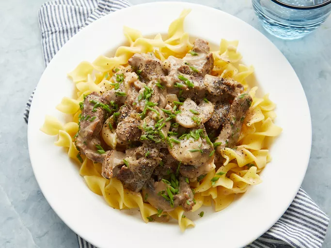

Beef Stroganoff

Description
This classic beef stroganoff recipe is a fairly lean
version, as most recipes call for more cream.
This is something you can easily adjust to your tastes.
I like a little thicker version, with just enough sauce
to coat the meat. Serve over buttered noodles.
Ingredients
- 2 pounds beef chuck roast, cut into 1/2-inch thick strips
- salt and pepper to taste
- 1 tablespoon vegetable oil
- 8 ounces sliced mushrooms
- ½ medium onion, sliced or diced
- 1 tablespoon butter
- 2 cloves garlic, minced
- 1 ½ tablespoons all-purpose flour
- ½ cup white wine
- 2 cups beef broth, divided
- ¾ cup creme fraiche
- 1 tablespoon fresh chopped chives
- salt and pepper to taste
Steps
- Season beef generously with salt and pepper.
- Heat oil in a large skillet over high heat until
nearly smoking. Stir in beef; cook, stirring
constantly, for 6 to 7 minutes, until liquid
evaporates and meat browns.
- Remove meat from the pan and set aside. Stir
mushrooms, onions, and butter into the pan;
cook and stir over medium heat until
vegetables are lightly browned.
- Add garlic and stir for 30 seconds. Stir in
flour; cook for 1 to 2 minutes until
incorporated. Stir in wine and 1 cup of broth,
scraping the bottom of the pan to release any
browned bits. Bring to a simmer and cook until
the sauce thickens, about 3 to 4 minutes.
- Return beef to the pan. Stir in remaining cup
of broth; bring to a simmer and cook on low
heat for about 1 hour, covered, until beef is
tender and sauce is thick. Stir every 20
minutes.
- Stir in crème fraîche. Stir in chives. Season
with salt and pepper to taste.